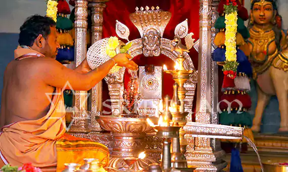

Devotees can contact the PROs at the PRO office between 8:00 am and 9:00 pm for assistance with darshans, temple information, participation in social welfare activities, or for support related to local and outstation travel, including foreign currency exchange, and may also reach out via email or phone.
Contact : email – contact@sripuram.org | Ph. – 0416-2206500
*Revised Rent Tariff From 1st July 2019*
Followings are the Rent (tariff) details of the Guest Houses:
*Non A/c Rs 1000/- (Double Occupancy) + GST Extra*
*A/c Rs 1500/- (Double Occupancy) + GST Extra*
*A/c Rs 2000/- (Standard Double Occupancy) + GST Extra*
*A/c Rs 2500/- ( Deluxe Double Occupancy) + GST Extra*
*Breakfast - Complimentary*
For Bookings Contact : Public Relations Office : 9942993009, 9942993010, 9942993021 Landline : +91 416 2206500 (10 Lines)
For the convenience of devotees visiting Sripuram, the management has provided a secured cloak room at the entrance, where devotees can deposit their belongings, including mobile phones, bags, food items, etc. and collect them after returning from the temple.
Tariff : Cell phone (per phone) Rs. 3.00, Baggage (per bag): Rs. 3.00, Footwear (per pair): Rs. 1.00
A dormitory has been constructed with all amenities to provide the devotees a comfortable stay and perform sevas and get the Divine Blessings of Sri Sakthi Amma.
Dormitory : Free dormitory with toilet facilities (Donation for bedding Rs.25/-) Paid dormitory with bedding & common toilet facilities
Donation : Rs.50/- per head. Also available spacious halls for group of persons @ Rs.1500/- for 30 adults.
A Helipad for devotees is available.
The Annalakshmi Mandapam is equipped with State-of-the-Art cooking facilities to prepare tasty and nutritious food. Every day, more than 6000 devotees who visit the temple are served with hot meals between 12 noon and 3 p.m. Devotees can sit comfortably on chairs and consume the delicious meal, which is served on fresh banana leaves on neatly laid multiple rows of dining tables. Devotees also perform seva here on a regular basis and contribute towards Annadhaanam.
Pilgrim/visitor safety and security is of utmost importance. The management urges pilgrims/visitors to adhere to guidelines at all times to have a blissful, divine experience at Sripuram and Sri Narayani Temple premises.
In case of Emergency, pilgrims must contact the nearest available Sripuram Staff, Security or PRO.
Ticketing Counter is conveniently located at the entrance of the Peedam, where devotees can buy tickets for Sevas, Prasadam, etc. The ticketing counter is equipped with sufficient manpower to handle the swelling crowd of devotees during festivals and special programs.
The queue complex has been designed to accommodate the swarming crowd with adequate ventilation and light. The queue complex is spaciously spread and also has stalls with a provision for drinking water, milk, biscuits, etc, for the devotees.
The prasadam counter is situated near the temple exit, where devotees can buy prasadam for their family and friends at a nominal price.
The Peedam houses conveniently located souvenir shops and stalls along the exit path where visitors can purchase Memorabilia, Prasadam (SriMadhu), Pooja Items, Clothes, Incense Sticks, Jewellery, Snacks, Beverages, as well as Handicrafts crafted by Destitute Women.
The Peedam provides comprehensive medical aid and first-aid support for all visitors. A qualified medical practitioner is available on the temple premises, equipped with a fully stocked first-aid kit to handle any injury or medical emergency. The temple is designed to be disabled-friendly, ensuring convenience for physically disabled individuals, senior citizens, and visitors with health challenges. Wheelchairs are available at the entrance along with escorts to facilitate comfortable darshan. In case of any medical need, visitors may approach the nearest Sripuram staff or security personnel for prompt assistance.
Sripuram has ample parking space, which can accommodate over 500 cars, 1500 two wheelers and over 100 buses. There are three parking bays created for easy access to the temple and to the guest houses.
Donation (Tariff) : Bus : Rs. 50.00, Van : Rs. 30.00, Car : Rs. 20.00, Two Wheeler : Rs. 3.00, Premium Parking facility available for Cars / Mini Vans Rs.50/-
With the divine blessings of Sri Sakthi Amma, the temple premises are disabled-friendly, providing wheelchairs and escorts at the entrance to facilitate darshan for physically disabled individuals, senior citizens, and visitors with special or health challenges, and additional support can be requested at the office for any exclusive assistance.
Donation (Tariff) : Wheelchair: Rs 50.00 per person
It is our culture & tradition to provide drinking water to our guests to quench their thirst. Amma’s devotees come from different parts of the world and it is our vital responsibility to provide pure drinking water. Adequate Drinking water facilities are provided at strategic locations in the temple premises.
To cater to the large number of devotees visiting the temple, Sripuram has facilitated spacious waiting areas with comfortable seating and adequate ventilation in the queue complexes. The waiting areas are equipped with television sets and boards with messages of Amma, which make the devotees feel the presence of Amma around them, even while waiting! Adequate drinking water and restrooms are made available in the queue complex.
Sri Narayani Bhavan – a multi cuisine restaurant near to Sripuram premises, serves vegetarian delicacies to devotees who visit the temple. Also, there are many stalls which serve fresh milk and fresh fruit juices for devotees at the Peedam.
The entire campus has been planned to ensure public convenience. Clean and well-maintained restrooms are located at the entrance, in the queue complexes and around the starpath, for the convenience of the devotees.
If we surrender then we are always at peace, and whether we get what we want or not, (or even whether we are happy or not) doesn't matter. This is becausewe accept everything that occurs happens for the best.
- Sri Sakthi Amma

It is considered very auspicious to witness the poojas for the vigraham (idol) of Mangala Narayani.